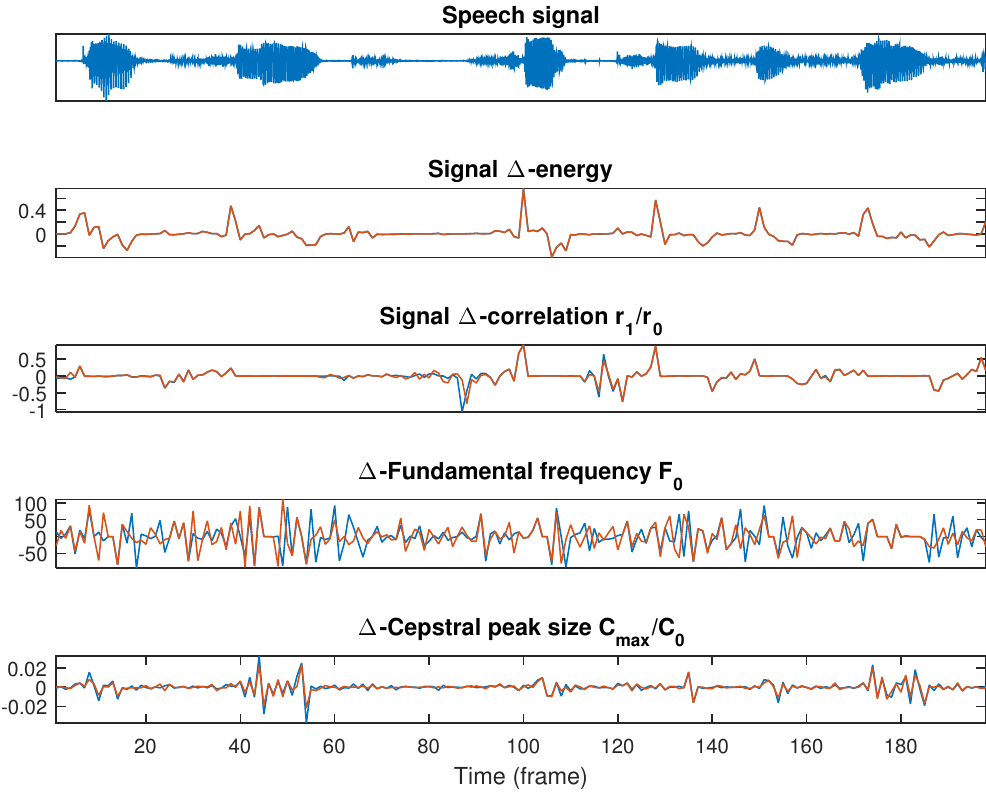
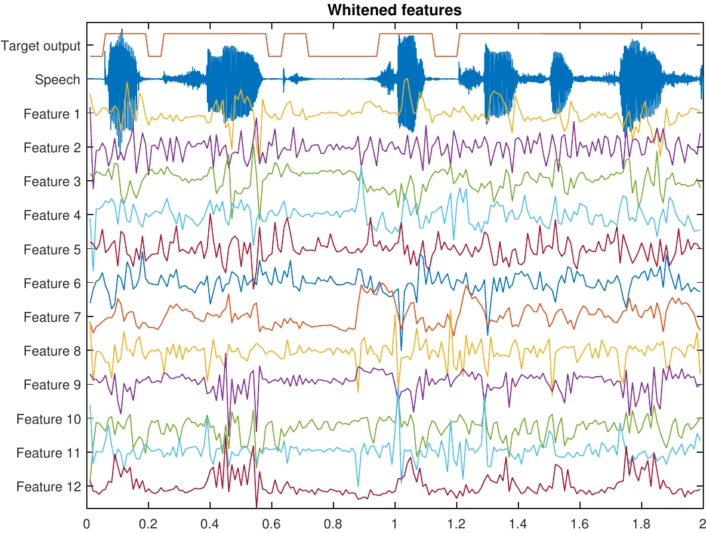
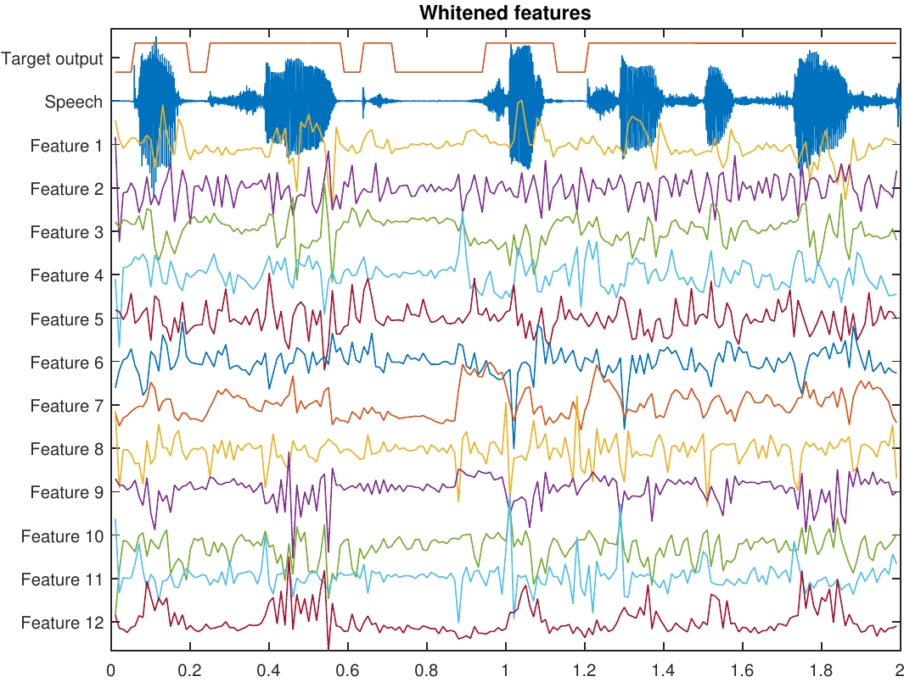
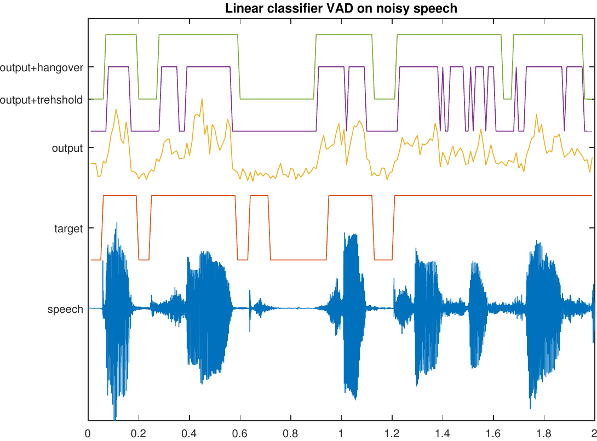
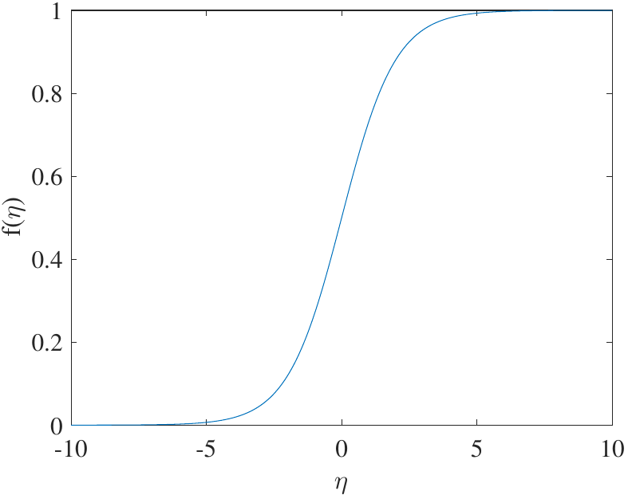

Voice Activity Detection (VAD)
Contents
Voice Activity Detection (VAD)¶
Introduction¶

Voice activity detection (VAD) (or speech activity detection, or speech detection) refers to a class of methods which detect whether a sound signal contains speech or not.
A closely related and partly overlapping task is speech presence probability (SPP) estimation.
Instead of a binary present/not-present decision, SPP gives a probability level that the signal contains speech.
A VAD can be derived from SPP by setting a threshold probability above which the signal is considered to contain speech.
In most cases, SPP is thus the more fundamental problem.
Voice activity detection is used as a pre-processing algorithm for almost all other speech processing methods.
In speech coding, it is used to to determine when speech transmission can be switched off to reduce the amount of transmitted data.
In speech recognition, it is used to find out what parts of the signal should be fed to the recognition engine. Since recognition is a computationally complex operation, ignoring non-speech parts saves CPU power.
VAD or SPP is thus used mostly as a resource-saving operation.
In speech enhancement, where we want to reduce or remove noise in a speech signal, we can estimate noise characteristics from non-speech parts (learn/adapt) and remove noise from the speech parts (apply).
A closely related method in audio applications is noise gateing, where typically a microphone signal is muted whenever there is no signal present.
For example, when a singer is not singing in the microphone, then the microphone is off. When the singer is not singing, microphone signal is only noise and therefore the noise gate removes (gates) noise.
VADs can thus also be used in improving signal quality.
# Initialization
#import sounddevice as sd
import IPython.display as ipd
from scipy.io import wavfile
import numpy as np
#from scipy import signal
#from scipy import linalg
fs = 48000
# Define windowing
window_length_ms = 30
window_step_ms = window_length_ms/2
window_step = int(np.round(fs*window_step_ms/1000))
window_length = window_step*2
spectrum_length = window_length//2 + 1
# Network parameters
past_frames_lookback = 10
hidden_layer_size = spectrum_length*2
bottleneck_size = 30
def stft(data,window_length=int(1440),window_step=int(1440/2)):
windowing_fn = np.sin(np.pi*np.linspace(0.5,window_length-0.5,num=window_length)/window_length) # half-sine window
window_count = int(np.floor((data.shape[0]-window_length)/window_step)+1)
spectrogram_matrix = np.zeros([window_length,window_count],dtype=complex)
for window_ix in range(window_count):
data_frame = np.multiply(windowing_fn,data[window_ix*window_step+np.arange(window_length)])
spectrogram_matrix[:,window_ix] = np.fft.fft(data_frame)
spectrum_length = window_length // 2 + 1
return spectrogram_matrix[range(spectrum_length),:]
def istft(spectrogram):
window_count = spectrogram.shape[1]
spectrum_length = spectrogram.shape[0]
window_step = spectrum_length-1
window_length = window_step*2
data_length = (window_count-1)*window_step + window_length
windowing_fn = np.sin(np.pi*np.linspace(0.5,window_length-0.5,num=window_length)/window_length) # half-sine window
data = np.zeros([data_length])
backward_index = range(spectrum_length-2,0,-1)
for window_ix in range(window_count):
full_spectrum = np.concatenate((spectrogram[:,window_ix],np.conjugate(spectrogram[backward_index,window_ix])))
data_window = np.fft.ifft(full_spectrum) * windowing_fn
data[window_ix*window_step + np.arange(window_length)] += np.real(data_window)
return data
Low-noise VAD = Trivial case¶

To introduce basic vocabulary and methodology, let us consider a case where a speaker is speaking in an (otherwise) silent environment.
When there is no speech, there is silence.
(Any) Signal activity indicates voice activity.
Signal activity can be measured by, for example, estimating signal energy per frame \(\Rightarrow\) the energy thresholding algorithm.

Clearly energy thresholding works for silent speech signals.
Low-energy frames are correctly labeled as non-speech and speech parts are likewise correctly labeled.
It is however not trivial to choose an appropriate threshold-level.
A low threshold level would make sure that all speech-frames are correctly labeled. However, we might then also label frames with other sounds, like breathing sounds or other background noises, as speech frames.
A high threshold would make sure that all detected speech-frames actually are truly speech frames. But then we could miss offsets (sounds which are trailing off), since they often have a low energy.
What strategy should we use to choose a threshold?
What is the correct label for something like breathing-noises?
How do we actually measure performance of a VAD?
VAD objective and performance measurement¶
The objective of a VAD implementation depends heavily on the application.
In speech coding, our actual objective is to reduce bitrate without decreasing quality. \(\Rightarrow\) We want to make sure that no speech frames are classified as background noise, because that would reduce quality.
\(\Rightarrow\) We make a conservative estimate.
In keyword spotting (think “Siri” or “OK Google”), we want to detect the start of a particular combination of words. The VADs task is to avoid running a computationally expensive keyword spotting algorithm all the time. Missing one keyword is not so bad (the user would then just try again), but if it is too sensitive then the application would drain the battery.
\(\Rightarrow\) We want to be sure that only keywords are spotted.
The objective of a VAD implementation depends heavily on the application.
In speech enhancement, we want to find non-speech areas such that we can there estimate noise characteristics, such that we can remove anything which looks like noise. We want to be sure that there is no speech in the noise estimate, otherwise we would end up removing some speech and not only noise.
In speech recognition, VAD is used purely for resource saving. We do not want to reduce accuracy of the recognition, but want to minimize CPU usage.
We need a set of performance measures which reflect these different objectives.
The performance is then often described by looking at how often are frames which do contain speech labeled as speech/non-speech, and how often is non-speech labeled as speech/non-speech?
Input |
Speech |
Non-speech |
|---|---|---|
Speech |
True positive |
False negative |
Non-speech |
False positive |
True negative |
For speech coding, we want to keep the number of false negatives low, and false positives are of only secondary importance.
For keyword spotting, we want to keep the number of false positives low, and false negatives are secondary importance.
Performance in noise – -3dB / -4dB threshold¶


Post-processing¶

We already saw that speech coding wants to avoid false negatives (=speech frames labeled as non-speech).
Can we identify typical situations where false negatives occur?
Offsets (where a phonation ends) often have low energy
\(\Rightarrow\) Easily misclassified as non-speech.Stops have a silence in the middle of an utterance.
\(\Rightarrow\) Easily misclassified as non-speech.
We should be careful at the end of phonations.
We can use a hangover time, such that after a speech segment we keep the label as speech for a while until we are sure that speech has ended.
For onsets (starts of phonemes) we usually want to be very sensitive.
We obtain a hysteresis rule;
If any of the last \(K\) frames was identified as speech, then the current frame is labelled as speech. Otherwise non-speech.
VAD for noisy speech¶
Clean speech (absolutely no background noise) is very rare if not impossible to achieve.
Real-life speech recordings practically always have varying amounts of background noise.
Performance of energy thresholding decreases rapidly when the SNR drops.
For example, weak offsets easily disappear in noise.
We need more advanced VAD methods for noisy speech.
We need to identify characteristics which differentiate between speech and noise.
Measures for such characteristics are known as features.
Features¶

In VAD, with features we try to measure some property of the signal which would give an indication to whether the signal is speech or non-speech.
Signal energy is naturally a useful feature, since the energy of speech varies a lot.
Voiced sounds generally have energy mainly at the low frequencies, whereby estimators for spectral tilt are often useful. For example,
Zero-crossings (per time unit) is high for high-frequency signals (noise) and low for low-frequency signals (voiced speech), whereby it can be used as a feature.
The lag-1 autocorrelation is high (close to one) for low-frequency signals and low (close to -1) for high-frequency signals.
Speech sounds can be efficiently modelled by linear prediction.
If the prediction error is small, then it is likely that the signal is speech.
If the prediction error is large, then it is probably non-speech.
Voiced speech has by definition a prominent pitch.
If we can identify a prominent pitch in the range then it is likely voiced speech.
Speech information is described effectively by their spectral envelope.
MFCC can be used as a description of envelope information and it is thus a useful set of features.
Linear prediction parameters (esp. prediction residual) also describe envelope information and can thus also be used as a feature-set. 
Speech features vary rapidly and frequently.
By looking at the rate of change \(\Delta_k=f_{k+1}-f_k\) in other features \(f_k\), we obtain information about the rate of change of the signal. (Estimate of derivative)
Likewise, we can look at the second difference \(\Delta\Delta_k=\Delta_{k+1}-\Delta_k\). (Estimate of second derivative)
These first and second order differences can be used as features and they are known as \(\Delta\)- and \(\Delta\Delta\)-features.
Classifier¶
We have collected a set of indicators for speech, the features, whereby the next step is to merge the information from these features to make a decision between speech and non-speech.
Classification is generic problem, with plenty of solutions such as
decision trees (low-complexity, requires manual tuning)
linear classifier (relatively low-complexity, training from data)
advanced methods such as neural networks, Gaussian mixture models etc. (high-complexity, high-accuracy, training from data)

Decision trees (historical)¶
Make a sequence of binary decisions (for example, is low or high energy?) to decide whether signal is speech or non-speech.
Decision trees are very simple to implement.
Hard-coded \(\Rightarrow\) not very flexible.
Noise in one feature can cause us to follow wrong path.
One noisy feature can break whole decision tree.
Requires that each decision is manually tuned
\(\Rightarrow\) Lots of work, especially when tree is largeStructure and development becomes very complex if the number of features increase.
Suitable for low-complexity systems and low-noise scenarios where accuracy requirements are not so high.
I did not prepare an illustration/figure of result.

Linear classifier¶
Instead of manually-tuned, binary decisions, can we use observed data to make a statistical estimate?
Using training data would automate the tuning of the model.
Accuracy can be improved by adding more data.By replacing binary decisions, we can let tendencies in several features improve accuracy.
Linear classifiers attempt to achieve a decision as a weighted sum of the features.
Let \(\xi_k\) be the features.
The decision is then obtained by \(\eta = \sum_k\omega_k\xi_k\), where \(\omega_k\) are scalar weights.
The objective is to find weights \(\omega_k\) such that $\(\eta = \begin{cases} -1 & \text{non-speech} \\ +1 & \text{speech}. \end{cases}\)$
We then need to develop a method for choosing optimal weights \(\omega_k\).
The first step is to define an objective function, which we can minimize.
A good starting point is the classification error.
If \(\eta\) is the desired class for a frame and our classifier gives \(\hat\eta\), then the classification error is \(\nu^2 = (\eta -\hat\eta)^2\).
By minimizing the classification error, we can determine optimal parameters \(\omega_k\).
Let \(x_k\) be the vector of all features for a frame \(k\) and \(X=[x_0,\,x_1\dots]\) a matrix with all features for all frames.
The classification of a single frame is then \(\eta_k=x_k^Tw\).
The classification of all frames is then a vector \(y=X^Tw\), where \(w\) is the vector of weights \(\omega_k\).
The sum of classification errors is the norm \(\|y-\hat y\|^2\).

A bit of math¶
The minimum of the classification error \(\|y-\hat y\|^2\) can be found by setting the partial derivative to zero. $\(\begin{split} 0 &= \frac\partial{\partial w}\|y-\hat y\|^2 = \frac\partial{\partial w}\|y-X^Tw\|^2 \\& = \frac\partial{\partial w}(y^Ty+w^TXX^Tw-2w^TXy) \\& =2XX^Tw - 2Xy. \end{split}\)$
The solution is the Moore-Penrose pseudo-inverse $\(w = (XX^T)^{-1}Xy^T := X^\dagger y.\)$
Note: This is a very common mathematical approach for solving problems in speech processing, so it is much more important and broadly applicable than “only” VAD.
Pre-whitening (advanced topic)¶
If the range of values from features are very different, we end up with problems.
A very loud voice will overrun weaker ones, even if the loud one is full of crap.
The range (mean and variance) of features need to be normalized.
Correlations between features are also undesirable.
The first step is removal of the mean, \(x' = x - E[x]\), where \(E[x]\approx \frac1N\sum_kx_k\) and \(N\) is the number of frames.
The covariance of the features is then \(C=E[x'(x')^T]\approx \frac1N X^TX\), where \(X\) now contains the zero-mean features.
The eigenvalue decomposition of \(C\) is \(C=V^TDV\), whereby we can define the pre-whitening transform \(A=D^{1/2}V\) and \(x'' = Ax'\).
The covariance of the modified vector is \(E[x''(x'')^T] = AE[x'(x')^T]A^T = A C A^T = D^{1/2}V V^TDV V^T D^{1/2}=I\).
That is, \(x''\) has uncorrelated samples with equal variance and zero-mean.
What you need to know is that pre-whitening is a pre-processing step, applied before training \(w\).
We thus train the classifier on the modified vectors \(x''=A(x-E[x])\), to obtain the weights \(w\).
The classifier with pre-whitening is $\(\nu=w^T x''=w^T A(x-E[x]) = \hat w^T (x-E[x])\)\( where \)\hat w=Aw$.
In other words, the pre-whitening can be included in the weights, so no additional complexity is introduced other than removal of the mean (which is trivial).
 

Post-processing¶

Above, we trained the classifier to get values \(\pm1\), but when using the classifier, we choose classes based on a threshold.
In practice, it does not matter if the output value is \(0.1\), \(1\) or \(1000\), because if it is above threshold, then it belongs to the same class.
Trying to hit \(\pm1\) is therefore an unnecessarily difficult task!
We should be just trying to obtain a multidimensional threshold which separates classes!
We can truncate the output such that big values are reduced to \(\pm1\).
The sigmoid function is a map \({\mathbb R}\rightarrow[0,1]\) defined as $\(f(\nu) = \frac1{1+\exp(-\nu)}.\)$
If we apply the sigmoid function on the output of the linear classifier, then overshooting is not a problem anymore: $\(\hat \nu = f(w^T x) \qquad\in[0,1].\)$

Then there is no analytic solution, but we must use iterative methods.
This function is known as a perceptron. Combining perceptrons into a interconnected network gives a neural network.
\(\Rightarrow\) A topic for other courses.Linear classifiers are only slightly more complex than decisions trees, but much more accurate.
Main complexity of VAD lies in feature-extraction anyway, so the differences in complexity of decision trees and linear classifiers is negligible.
The main advantages of linear classifiers in comparison to decision trees are that
(unbiased) we can use real data to train the model, whereby we can be certain that it corresponds to reality (no bias due to manual tuning),
(robust) whereas noise in one feature can break a decision tree, linear classifiers merge information from all features, thus reducing effect of noise.
More advanced classifiers¶
There exists a large range of better and more complex classifiers in the general field of machine learning.
Linear discriminant analysis (LDA) – splits the feature space using hyper-planes.
Gaussian mixture models (GMM) – the feature space is modelled by a sum of Gaussians.
Deep neural networks (DNN) – similar to linear classifiers but adds non-linear mappings and several layers of sums.
K-nearest neighbors (kNN), support vector machine (SVM), random forest classifiers, etc.
These methods are in general more effective, but training and application is more complex.
Advice: Try a simple approach first and see if its good enough.
Speech Presence Probability¶
The output of the classifier is a continuous number, but it is thresholded to obtain a decision.
The continuous output contains a lot of information about the signal which is lost when applying thresholding.
With a high value we are really certain that the signal is speech, while a value near the threshold is relatively uncertain.
We can use the classifier output as an estimate of the probability that the signal is speech \(\Rightarrow\) It is an estimator for speech presence probability.
Subsequent applications can use this information as input to improve performance.
Output before thresholding¶
Noise types¶
As noted before, VAD is trivial in noise-free scenarios.
In practice, typical background noise types are for example, office noise, car noise, cafeteria (babble) noise, street noise, factory noise, …
Clearly the problem is easier if the noise has a very different character than the speech signal.
Speech is quickly varying \(\Rightarrow\) stationary noises are easy.
Speech is dominated by low frequencies \(\Rightarrow\) high frequency noises are easy.
The classic worst case is a competing (undesired) speaker, when someone else is speaking in the background (babble noise).
However, that would be difficult also for a human listener, whereby it actually is a very difficult problem.
Conclusions¶
Voice activity detection is a type of methods which attempt to determine if a signal is speech or non-speech.
In a noise-free scenario the task is trivial, but it is also not a realistic scenario.
The basic idea of algorithms is:
Calculate a set of features from the signal which are designed to analyze properties which differentiate speech and non-speech.
Merge the information from the features in a classifier, which returns the likelihood that the signal is speech.
Threshold the classifier output to determine whether the signal is speech or not.
VADs are used as a low-complexity pre-processing method, to save resources (e.g. complexity or bitrate) in the main task.